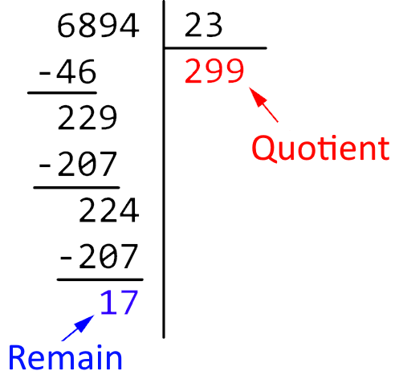

A. Etymology of the term
The first time we heard of an "Algorithm" was around the year 800. In Persia, thanks to the mathematician Abu Abdullah Muhammad ibn Musa al-Khwarizmi. The Latins only retained the Latinized form of his name which gave the word: Algorismus.
B. Prelude to the algorithmic
One of the oldest algorithms and one of the best known is Euclid's algorithm, which we will talk about a little later. Found in one of his books, and written around 300 BC, it allowed the division of two real numbers as well as the calculation of the greatest common divisor between two integers. This shows that despite what one might think, the algorithms are very old. From then on, the algorithms created are exclusively used for mathematics, until the moment when computer science appears.
Since computer science is related to mathematics and requires a large number of often recurring calculations, it is here that algorithmics and computer science merge. The loops of algorithms are going to be extremely useful for computing. This will subsequently allow a huge technological advance, the one we know today.
C. Euclid's algorithm
Euclid's algorithm is sometimes used to find the PGCDLarger Common Divisor of two integers. This is a simple Euclidean division where the result "serves" the next division. We stop when the rest of the division is null, the resulting result is then the last rest of the division. The last remainder is then the GCD of the two integers used; in the example below 36 is the GCD.
| Dividend | Divider | Remain |
| 360 | 252 | 108 |
| 252 | 108 | 36 |
| 108 | 36 | 0 |
The extended Euclide algorithm allows it to calculate the Bezout coefficients of two integers a and b qui, for two other integers u and v such that au + bv = GCD(a, b) but also to find the solutions of an equation of the form au + bv = 1 (Bezout Theorem).
D. Algorithms in the 19th century
Yes, indeed, one could say that it was at this time that for the first time in the industrial world, the same method as an algorithm was used to obtain an object. I'm talking of course about line work!

Then of course! The term "line work" reminds us directly of the sequence in the film "Modern Times" where Charlie Chaplin makes a humorous caricature of line work. But theoretically the process of assembly line work is the same as the definition of an algorithm.
We have 1 or more pieces at the base and we're going to do a lot of simple tasks in order to achieve a complex task and end up with a finished product.
The best example of assembly line work is Taylorism, which is an improved and optimized version of the classic assembly line work. To illustrate what I am saying, I recommend that you consult this link and read the quote by following this link.
After the second Industrial Revolution came the third Industrial Revolution where, precisely, we will exploit this aspect of Algorithm much more in order to make Internet, automata and robots see the light of day.